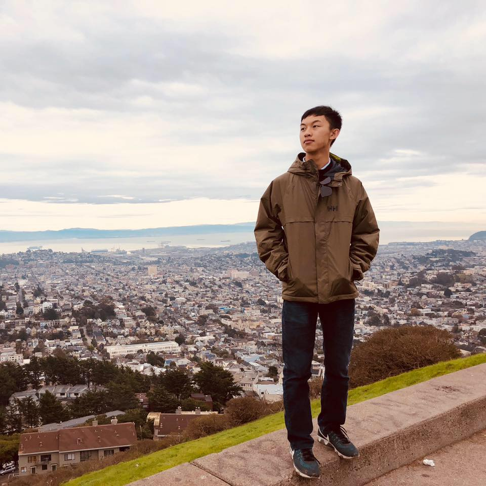

Wanqi Zhu
Wanqi Zhu
*
The purpose of my life is to expand the boundary of human understanding,
seek joy in every single moment,
and utilize my gift to its fullest potential for myself and others.
*
I don't know what my path looks like, but I want to live a life worth living.
My current focus is on understanding myself and pocketing orthogonal experiences for reflection and growth. I treasure the spirit of wondering, and I try to live my life with the following maxim: every person has a story to tell; every experience is a chance for reflection.
Some ambiguous keywords about myself that I'm interested in talking about:
- Math ↔ CS Theory
- Problem Solver ↔ Rational Thinker ↔ Lifelong Wonderer
- Openness ↔ Embracing Serendipity
- Experientialism
Competitions->Capital-T Truth-> Seeking Understanding.Entrepreneurship-> Spirit of Innovation- Nanjing ↔ Chicago ↔ Stanford
- SPARC-camp
- Nature ↔ Birds ↔ Wildlife Photography
- Poetry ↔ Sci-fi ↔ Short Stories
- Go ↔ League of Legends ↔ Strategy Games
Some musings...